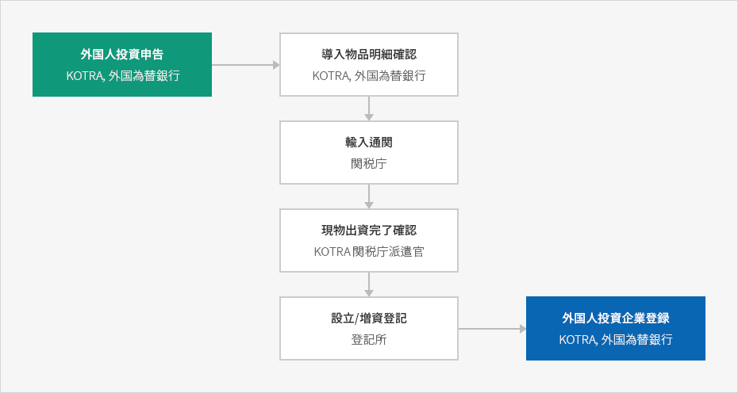
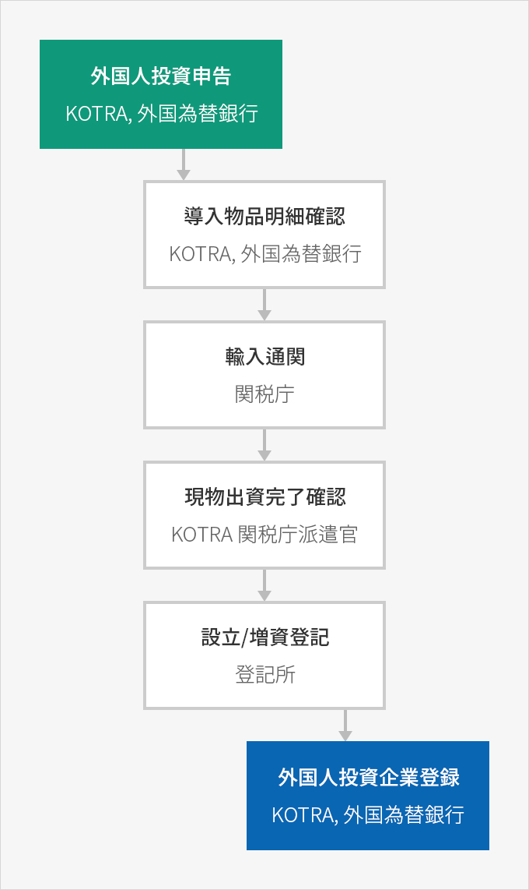

資本財導入
- Home
- 経営・生活
- 通関
- 資本財導入
外国人投資家が導入した資本財に対する関税の免除を受けたり、現物出資のために資本財を導入する場合、資本財導入物品の明細を検討・確認した上で通関手続きを経なければならない。
資本財導入の手続き



- 外国人投資申告 (KOTRA, 外国為替銀行)
- 導入物品明細確認 (KOTRA, 外国為替銀行)
- 輸入通関 (関税厅)
- 現物出資完了確認 (KOTRA 関税庁派遣官)
- 設立/增資登記(登記所)
- 外国人投資企業登録(KOTRA, 外国為替銀行)

資本財導入物品明細の検討・確認
外国人投資申告後に受託機関(外国為替銀行又はKOTRA)に資本財導入による資本財導入物品明細の検討・確認を申請しなければならない。検討・確認の対象の資本財は下記の通りである。
- 関税・個別消費税及び付加価値税の免除対象の資本財
- 外国人投資家が出資(出捐)の目的物として導入する資本財
- 外国人投資企業が外国人投資家から出資を受けた対外支払手段やその交換で発生する内国支払手段で導入するもので、産業通商資源部長官が指定・告示する物品中の資本財
※ 関連規定 : 「外国人投資促進法施行令」第38条
※ 資本財の定義 : 「外国人投資促進法」第2条第①項第8号
※ 資本財の定義 : 「外国人投資促進法」第2条第①項第8号